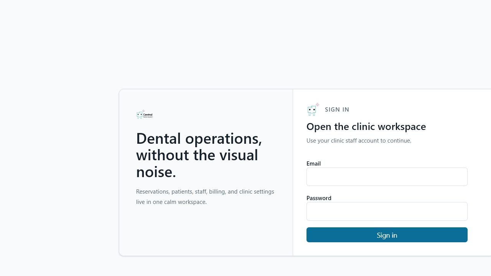

Current review: R1 route-owned data boundary + R2 background booking confirmation
Reviewed: 2026-08-22 • Decision: IMPLEMENTED; SIGNED-IN ROLE/RESPONSIVE QA PENDING
The latest slice completes the frontend route-owned data boundary, gives Settings its own governed v1 contract, makes slot-start timing Owner-controlled, replaces duplicate Day Schedule reads with one cached snapshot plus adjacent-date prefetch, and lets slow server-confirmed bookings continue in a visible background state. Earlier Staff, Inventory, R0, and R0A evidence remains below.
Environment note: the live API readiness endpoint reports Supabase reachable and Prisma migration status confirms all 26 repository migrations are applied. The isolated Login route renders empty credential fields without console errors; no test password was used or embedded for authenticated screenshots.
Runtime hardening: Supabase Transaction Mode is now the fail-safe default, invalid pooler modes fail at startup, and four normalization tests cover default, explicit Session Mode, typo handling, and portability to non-Supabase databases. Next development and production artifacts are isolated into .next-dev and .next; the reproduced missing-chunk HTTP 500 no longer survives the dev-server configuration reload.
Decision: SOURCE + AUTOMATION PASS; SIGNED-IN MANUAL QA REQUIRED
| Review checklist | Status | Evidence and finding |
|---|---|---|
| Route-transition bootstrap reuse. | PASS | Normal clinic navigation reuses one concurrent /auth/me and /api/v1/workspace/bootstrap load and preserves the mounted workspace provider. Logout, expiry, explicit session end, failed authentication, and 401 clear the session-local cache; failures remain retryable. |
| Legacy aggregate retirement. | PASS | Every frontend workspace path resolves to either the minimal shell bootstrap or the bounded Schedule bootstrap. No application source calls /operational-data; unknown and legacy alias paths fail small rather than silently restoring the aggregate. |
| Bounded Settings contract. | PASS | /api/v1/settings is restricted to organization-scoped Owner/Admin roles, returns only clinic identity and scheduling policy, and audits updates. Location-scoped Admins are denied. AD is authoritative, overbooking is disabled, and only Owners can choose the 5/10/15/20/30/60-minute offered-slot interval. |
| Schedule request consolidation and cache. | PASS | All planning reads now sit under /api/v1/schedule. Day view requests one appointment-plus-provider-grid snapshot instead of two frontend requests and prefetches the previous and next dates after useful content renders. Superseded visible Day/Week/Month HTTP reads are aborted. Session caches use a 32-entry LRU bound and mutation/configuration/logout invalidation; stale responses cannot repopulate invalidated data. |
| Day-board rendering. | PASS IN SOURCE | The desktop Day board keeps provider headings and the time axis sticky inside a bounded scroll surface. Provider slots are indexed once by Provider/start time instead of scanning every Provider slot for every rendered cell; mobile retains its compact Provider-first list. |
| Bounded Staff data contract. | PASS | /api/v1/staff supplies bounded fields, summary counts, search, role/status/location filters, sorting, and pagination. Directory rows do not include Provider schedules; full schedule detail loads only after an authorized action. Entering Staff no longer requests /operational-data. |
| Role and location enforcement. | PASS | Owner/Admin management requires organization scope, Managers receive a location-scoped coordination view, and Finance-only actors are denied. Only an organization-scoped Owner may create, promote, reset, edit, archive, or restore an Owner account. Finance and Inventory Manager are supported as additive roles. Navigation consumes the server-issued Staff capability. |
| Professional responsive interaction surface. | PASS IN SOURCE | The route has real metric counts, debounced search, filters/sort/pagination, desktop table/mobile cards, chips, skeleton/error/empty/retry states, and right-side create/edit/schedule/password/grant/revoke/archive/restore drawers. Role grants search beyond the visible page; archive/restore requires typing the exact account email. |
| Scheduling consistency. | PASS | Provider schedule detail is demand-loaded, writes are server-confirmed, and successful changes invalidate planning caches for that Provider so later Schedule views cannot reuse stale availability. |
| Automated and live verification. | PASS | The complete suite passes 269 tests with one deliberate disposable-database skip; API v1 107/107, workspace boundary 44/44, API client 27/27, and phase-two UI 14/14 pass. Typechecks and the production web build pass. Migration 000026 is applied; live readiness reports database: reachable and all 26 migrations current on Supabase. |
/auth/me and /v1/workspace/bootstrap are not repeated on each transition and no route issues an /operational-data request./v1/schedule/day request supplies each cold day, adjacent prefetched days render without a full-section wait, and a Settings/schedule mutation invalidates affected cached dates.artifacts/staff/staff-desktop.pngartifacts/staff/staff-mobile.pngartifacts/staff/staff-scope.pngNext implementation item: finish R1 evidence by collecting representative-volume query plans, payload sizes, and cold/warm p50/p95 timings. Then proceed to R2 booking perceived-performance work without weakening server-confirmed conflict handling.
Decision: IMPLEMENTED IN SOURCE; SLOW-NETWORK QA PENDING
| Review checklist | Status | Evidence and finding |
|---|---|---|
| Authoritative confirmation. | PASS | The appointment is never shown as booked until /api/v1/booking/confirm commits and responds. The existing payload fingerprint and actor-scoped idempotency key are preserved for uncertain-response retry. |
| Useful workspace during a slow commit. | PASS IN SOURCE | After 400 ms, an in-flight confirmation minimizes to a fixed responsive status card. The modal and its body-scroll/focus lock are removed while the workflow component and protected request remain mounted, so unrelated workspace content stays usable. |
| Completion and recovery. | PASS | The status card distinguishes pending, server-confirmed success, and attention-required outcomes. It reopens the exact workflow; confirmed results invalidate scoped Schedule/Client data, while uncertain results retain safe retry evidence rather than issuing a new logical booking. |
| Regression gate. | PASS | Phase-two UI tests pass 14/14, including proof that a minimized workflow renders no modal surface. Full typecheck, lint, formatting, boundary checks, and secret scan pass. |
Decision: CORE READY FOR SIGNED-IN MANUAL REVIEW
| Review checklist | Status | Evidence and finding |
|---|---|---|
| Finance-independent domain and bounded loading. | PASS | Inventory owns its route data through /api/v1/inventory/workspace and /movements, uses the minimal workspace bootstrap, and never reads or mutates invoices, payments, COGS, or accounting entries. |
| Catalog, thresholds, suppliers, and responsive UI. | PASS | The desktop table and mobile cards expose search, location/lifecycle filters, low/out-of-stock and expiring-lot summaries, supplier references, and right-side drawers. Owner/Admin can create and edit audited catalog/reorder settings; SKU remains immutable and lot policy locks after movement history exists. |
| Authoritative stock commands. | PASS | Receive, use, adjust, stocktake, and transfer commands use stable actor-scoped idempotency, serializable transactions, advisory balance locks, location authorization, server-derived before/after balances, reason/reference evidence, and explicit negative-stock rejection. |
| Lot, expiry, and movement integrity. | PASS | Tracked items require lots, unavailable/expired lots cannot be consumed or transferred, expiry dates remain AD/UTC canonical through the end of the selected date, and PostgreSQL verifies balance arithmetic. A database trigger rejects movement update/delete so corrections must be compensating movements. |
| Permissions and lifecycle. | PASS | Owner/Admin/Inventory Manager access is server-derived and location-scoped; Finance alone receives no Inventory authority. Items must have zero stock before archive, can be restored, and only an Owner can permanently delete an archived, unused item after typing its exact SKU; retained history makes purge fail closed. |
| Automated verification. | PASS | Both Inventory migrations are applied and Prisma validation/status pass. The full repository suite passes 247 tests with one deliberate disposable-PostgreSQL skip; API v1 passes 95/95, Inventory/web transport passes inside API-client 23/23, and workspace boundary passes 41/41. API/web typechecks and production builds, web lint, formatting, secret scan, web-Prisma boundary, diff check, and route inventory (133 protected/default-deny handlers) pass. |
/operational-data request when entering Inventory.artifacts/inventory/inventory-desktop.pngartifacts/inventory/inventory-mobile.pngartifacts/inventory/inventory-scope.pngAccepted phase boundary: procurement/purchase orders, supplier edit/archive lifecycle, automatic consumption from Records, valuation, COGS, and accounting integration are not part of R0I. They must remain separate future work and cannot be inferred from stock movements.
Reviewed: 2026-08-15. Decision: READY FOR SIGNED-IN MANUAL REVIEW; PERFORMANCE PROGRAM CONTINUES
| Review item | Status | Evidence and next gate |
|---|---|---|
| Sidebar notification/profile/logout leave the viewport. | FIXED IN SOURCE | The desktop sidebar is sticky at 100vh, clips its shell, scrolls only the navigation region, and keeps Attention/Profile anchored in a non-scrolling footer. Manually check short laptop heights and browser zoom. |
| Proper, explicit Sign out control. | R0A — IMPLEMENTED + TESTED | Clinic desktop footer, profile menu, mobile More surface, and Super Admin header now share a labelled Sign out command. It becomes pending/disabled once, waits for protected server revocation, preserves the active session and draft on failure, confirms before discarding a dirty Quick Book draft, blocks during booking commit, clears tenant caches and sensitive booking state after success, notifies peer tabs through a validated versioned channel, and redirects without leaving clinic content mounted. Signed-in short-height, 200% zoom, touch, cross-tab, and forced-failure browser evidence remains the manual gate. |
| Schedule heading repeats. | FIXED IN SOURCE | The utility bar exposes an accessible-only route heading, the redundant My Schedule wrapper heading is removed, and the reservation module owns the one visible title. Provider availability remains a separate action. |
| Month view hydration error from nested buttons. | FIXED + REGRESSION TESTED | Each date cell is now a non-interactive container with sibling Select Date and Open Day buttons. Both actions retain keyboard labels without invalid interactive nesting; the server-rendered markup regression test rejects nested buttons. |
| Full-page loader makes navigation feel slower. | SHELL SKELETON SHIPPED | Protected workspace loading preserves the 272px desktop sidebar, header, route-shaped content, and mobile bottom navigation. Schedule sections, Client directory/profile, and Finance use content-shaped skeletons with reduced-motion support. Platform-specific loading remains part of the Super Admin rework. |
| Providers cannot add new Clients. | FIXED + TESTED | The booking UI now consumes the server-issued canCreateClient capability instead of maintaining a second browser role list. The API workspace test proves a Provider receives the capability; general correction, merge, archive, and purge authority is unchanged. |
| Slow workspace and Schedule startup. | BOUNDED STARTUP SHIPPED | Session, workspace, and Schedule bootstrap requests begin concurrently. The new tenant/location-scoped /api/v1/schedule/bootstrap returns only active providers, scoped schedule rules, and active services—no Clients, staff, Records, follow-ups, or appointment history. Visible range responses carry only directory-safe labels, repeat planning requests share one in-flight promise, and stale responses cannot repopulate caches after mutation. Full representative-volume p50/p95 and query-plan evidence remains the R1 release gate. |
| Staff Management professional UI and bounded data. | R1S — IMPLEMENTED | The bounded v1 Staff projection and responsive workspace now provide real summary counts, server search/filter/sort/pagination, desktop table/mobile cards, chips, governed right-side drawers, searchable additive role grants, typed archive/restore confirmation, and complete loading/empty/unavailable/retry states. Signed-in role/location and viewport evidence is the remaining acceptance gate. |
| Owner control of slot timing. | IMPLEMENTED + MIGRATED | The bounded Settings contract exposes an Owner-only organization slot-start interval with allowed values 5/10/15/20/30/60 minutes and default 15. It controls offered start cadence—not service duration, appointment duration, capacity, or buffers—and changes audit/increment the schedule configuration version, invalidate planning caches, and never rewrite existing appointments. |
| Dashboard interaction latency. | OPTIMISTIC UPDATE ADDED | Confirm/Complete updates the visible dashboard immediately, waits for the authoritative command, and restores the exact previous snapshot with a visible error on failure. It no longer blocks on a second dashboard bootstrap request. |
| Reservation calendar, Super Admin, major UI/mobile rework. | PLANNED | These are now ordered R3, R4, and R6 in the tangible delivery plan. Calendar package selection follows the bounded Schedule API and performance baseline; broad visual polish follows workflow stabilization. |
| Finance workflow. | MANUAL QA QUEUED | The accepted implementation is unchanged. Run the dedicated Owner/Finance/Receptionist/denied-role desktop and mobile checklist below before release claims. |
npm.cmd run typecheck passed for web and API.Server-Timing and x-response-time-ms without logging sensitive payloads./api/health/ready returned HTTP 200 with {"status":"ok","database":"reachable"}. The isolated browser Login route rendered empty credential fields and produced no console warnings or errors.POST /api/auth/logout with the CSRF header and the session cookie is cleared.Server-Timing, and response sizes for /auth/me, /v1/workspace/bootstrap, /v1/schedule/bootstrap, the visible appointment range, and the day grid. Confirm no /operational-data request appears on Schedule routes./operational-data request, skeletons do not overflow, and reduced-motion mode removes pulsing animation.Visual evidence limitation: ClinicFlow was isolated on port 3100 because port 3000 belongs to a different local Remotion project. The browser Login route was checked with empty credential fields and a clean console, but the available browser session had no ClinicFlow credentials, so authenticated screenshots and signed-in R0A interaction evidence are deliberately not claimed.
Reviewed: 2026-07-27. Decision: READY FOR AUTHENTICATED MANUAL REVIEW; NOT YET VISUALLY CERTIFIED
| Review checklist | Status | Evidence and finding |
|---|---|---|
| Visible end-to-end Finance workflow. | PASS | The responsive Finance workspace includes New Invoice, Issue, Record Payment, immutable invoice detail/ledger, Refund/Reversal, correction approval, and daily reconciliation side drawers. Mutations wait for server confirmation and preserve stable idempotency keys for retry. |
| Authorization and location isolation. | PASS | Manager and Scheduler no longer inherit Finance authority. Receptionist may create drafts and record eligible payments but cannot issue, correct, approve, or reconcile. Finance may issue/initiate/reconcile; only a distinct Owner/Admin may approve. Server capabilities and invoice location scope drive the UI. Legacy mutations return 410 Gone; retained GET compatibility is tenant/location scoped. |
| Immutable money lifecycle. | PASS | NPR amounts use decimal strings at the v1 boundary and DECIMAL(18,2) storage. Completed receipts are append-only. Refunds and reversals create linked corrections, pending/rejected corrections do not change balance, and only executed corrections affect derived invoice status/balance. |
| Idempotency, concurrency, and approval. | PASS ON SUPABASE | Draft, issue, payment, and correction commands use actor-scoped idempotency keys and request hashes. Serializable transactions use advisory request locks plus Invoice → Payment → Correction row-lock order. A Supabase-backed test proved exactly one of two competing NPR 60 payments can reach an NPR 100 invoice and exactly one of two competing NPR 40 corrections can reserve an NPR 60 receipt. |
| Ledger and reconciliation correctness. | PASS | Workspace rows expose gross collections separately from executed corrections; payment entries expose server-computed remaining correctable value. Daily corrected totals use executedAt, while pending approval uses request time. Non-cash receipts require a reference. |
| Migrations and automated gates. | PASS | Migrations 000019 and 000020 are applied. Prisma generation/validation, API and web typechecks/builds, full web lint, the full repository test suite, 81 focused v1 tests, 15 Finance/web transport tests, route inventory, Prisma-boundary, secret scan, and the PostgreSQL Finance gate pass. |
| Independent code review. | FINDINGS ADDRESSED | The review identified unsafe legacy location scope, missing draft/payment UI, a correction-action ledger mismatch, wrong reconciliation date attribution, incorrect gross-versus-corrected row totals, null-location fail-open risk, and mixed location-role capability leakage. Every finding was repaired and regression-tested; the final re-review found no remaining actionable Finance defect. |
| Authenticated responsive QA. | MANUAL QA PENDING | Verify Owner/Admin, Finance, Receptionist, Manager, and Scheduler sessions on desktop and 375px mobile. No screenshot is claimed until the authenticated browser run succeeds. |
Verified /billing returns to sign-in without rendering clinic data after the repaired web runtime reload.

Capture authenticated invoice summary, ledger, and role-correct actions.
Pending authenticated captureCapture 375px layout, fixed actions, amount impact, and error state.
Pending authenticated captureCapture Owner/Admin pending approval and Finance daily exceptions.
Pending authenticated captureNext implementation item after manual acceptance: begin P5 governed Records and dental-chart revisions. Fonepay/provider settlement remains P6B and Inventory remains separate.
Reviewed: 2026-07-27. Decision: READY FOR AUTHENTICATED MANUAL REVIEW; NOT YET VISUALLY CERTIFIED
| Review checklist | Status | Evidence and finding |
|---|---|---|
| Shared responsive intake. | PASS | NewClientDrawer uses the shared drawer, minimal Client fields, optional expanded disclosure, fixed actions, dirty-close confirmation, AD date storage with derived BS context, visible failures, and server-confirmed success. The route exposes it only when canCreateClient is granted. |
| Governed identity matching. | PASS | Number-first matching never auto-selects a record. Staff explicitly use an existing Client or continue as distinct; equivalent Nepal phone formats are not appended twice. Identity edits invalidate prior evidence, while the API compares the exact candidate-set version and reviewed IDs inside the transaction. |
| Authorization and validation. | PASS | Owner, Admin, Manager, Receptionist, and Provider may create a Client. Providers may append the caller's number only through the candidate-versioned selected-match command; the generic phone endpoint and general profile correction, archive, merge, deletion, and identity-review resolution remain denied. The API enforces bounded fields, email format, canonical primary/emergency phone lengths, and a real non-future AD DOB using the Nepal clinic day. |
| Atomicity, replay, and privacy. | PASS | ClientsV1Service creates Client, chart, primary phone, optional review, audit, and receipt in one serializable transaction. Receipts retain only Client ID/code and review outcome; replay reads current canonical display identity. Existing development receipts were redacted and receipts cascade with Owner-governed Client purge. |
| PostgreSQL concurrency and rollback. | PASS ON SUPABASE | The B7 database gate proves concurrent same-key requests create one record, different keys racing the same reviewed identity allow one and force the other to re-review, and a forced receipt failure rolls back the Client. |
| Migrations. | APPLIED | Migrations 000016, 000017, and 000018 add the scoped receipt, align it with Client purge, and whitelist/redact the stored replay payload. |
| Independent code review. | FINDINGS ADDRESSED | Review findings covering receipt privacy, PostgreSQL identity-race proof, email/DOB/emergency-phone validation, canonical replay, Nepal-local date handling, accessible match names, and the Provider caller-phone authorization race were repaired and retested. The final re-review found no actionable issue. |
| Automated gates. | PASS LOCALLY | Repository lint, web/API typechecks, full unit/integration suite, Prisma validation, web/API production builds, 69 focused v1 tests, and the Supabase-backed B7 database gate pass. |
| Authenticated visual and interaction QA. | MANUAL QA PENDING | No screenshot is presented without an authenticated browser run. Desktop/mobile layout, keyboard focus, discard behavior, and live duplicate review remain the manual release checklist below. |
Pending authenticated browser QAPending authenticated browser QAPending authenticated browser QANext implementation item: close the Finance UI/reconciliation slice, keeping Inventory separate.
Reviewed: 2026-07-26. Decision: READY FOR AUTHENTICATED MANUAL REVIEW; NOT YET VISUALLY CERTIFIED
| Review checklist | Status | Evidence and finding |
|---|---|---|
| One authoritative submit boundary. | PASS | BookingConfirmationService owns Client resolution, appointment creation, workflow/audit evidence, hold consumption, and the durable replay receipt inside one serializable transaction. The frontend no longer chains compatibility Client and appointment writes. |
| Idempotency and uncertain retry. | PASS | The API scopes the receipt key to organization and actor, compares a canonical request hash, serializes concurrent replays with a transaction advisory lock, and returns the committed result. GuidedQuickBookFlow retains the exact payload/key after a network or 5xx uncertainty and does not show premature success. |
| Scheduling and hold authority. | PASS | Confirmation locks the Provider, derives current duration plus the effective Provider-window/service buffer, rechecks availability, validates the exact actor/draft/location/Provider/service/time hold, rejects competing holds, and conditionally consumes the hold. Changed schedule rules return AVAILABILITY_CHANGED. |
| Client identity integrity. | PASS | Existing Clients are tenant-scoped and active/canonical. New Client confirmation requires the number-first candidate-set version even when empty, compares it inside the transaction, records skipped-match evidence, and permits phone append only to authorized Client writers. |
| PostgreSQL concurrency and rollback. | PASS ON SUPABASE | The database integration gate passed concurrent same-key replay, competing same-slot requests, serialization retry when a matching Client appears, expired-hold denial, and forced failure after Client creation with full rollback. It also caught and drove the repair of Prisma handling for the PostgreSQL advisory-lock statement. |
| Migration and generated client. | APPLIED | Migration 000015 is applied, the full Prisma Client regenerated successfully, and the durable receipt has organization/actor/key, appointment, Client, optional hold, request hash, and response constraints. |
| Independent code review. | NO OPEN FINDINGS | The review found Provider-window buffer loss, optional stale-match protection, unstable scheduling recovery reasons, and missing real-database evidence. All were addressed; the final re-review found no remaining actionable code defect. |
| Authenticated visual and interaction QA. | MANUAL QA PENDING | No screenshot is presented as evidence without an authenticated browser run. Desktop/mobile confirmation, uncertainty recovery, conflict focus, and success rendering remain the manual release checklist below. |
IDENTITY_MATCH_CHANGED requires reviewing candidates again.Pending authenticated browser QAPending authenticated browser QAPending authenticated browser QANext implementation item: implement B7 standalone New Client drawer using the B5/B6 identity primitives.
Reviewed: 2026-07-25. Decision: READY FOR MANUAL REVIEW AFTER MIGRATION; NOT RELEASE-CERTIFIED
| Review checklist | Status | Evidence and finding |
|---|---|---|
| Fast slot-first guided path. | PASS IN SOURCE | GuidedQuickBookFlow presents Provider, AD-first date, service/duration, priority, and server-ranked times. It discloses five recommended times first, places later times behind More times, and then reuses the B3 Client and match steps with the held slot pinned above them. |
| Hold lifecycle and retry safety. | PASS IN SOURCE | BookingAvailabilityService derives tenant and actor scope from the session, validates location/Provider/service slots, checks a stable availability version and slot token, compares a canonical request hash on idempotent replay, limits active holds per actor, and uses database time for expiry. Network uncertainty retains the same idempotency key; a real conflict refreshes availability. |
| Concurrency and terminal-state integrity. | PASS IN SOURCE | Hold creation, release, and appointment conversion serialize on the Provider row. Release additionally locks the hold row, while conversion conditionally consumes only an active, unreleased, unconsumed hold. The migration prevents both terminal timestamps from being set and keeps appointment overlap enforcement authoritative. |
| Countdown, expiry, and accessible recovery. | PASS IN SOURCE | The countdown is derived from the server expiry and recalculated on focus/visibility changes. Screen-reader announcements occur at meaningful thresholds instead of every second. Expiry keeps Client intake intact, moves focus to the recovery alert, and requires choosing another time. |
| B4/B6 boundary. | PASS | B4 produces a typed ready payload and does not claim a completed booking. B6 now consumes that handoff through one idempotent transaction that resolves Client identity, appends phones/review evidence, revalidates and consumes the hold, creates the appointment, and persists the replayable result. |
| Automated gates. | PASS LOCALLY | The full local suite passes 167 tests with one deliberate disposable-PostgreSQL skip. Prisma validation/generation, API and web typechecks/builds, frontend lint, route inventory (107 handlers across 18 controllers), web-Prisma boundary, secret scan, and diff checks pass. Focused coverage includes active-hold filtering, Provider-lock ordering, overlap denial, same-request replay, different-request idempotency conflict, stale availability conflict, serialized release, and exact hold consumption. |
| Independent code review. | FINDINGS ADDRESSED | The review identified stale-response and editable-control races during hold creation, a stuck 409 refresh path, non-awaited release before reselection, and an unnecessarily broad hold query/version. The repairs freeze schedule controls, verify the response against the live draft, explicitly refresh conflicts, await release, and bound hold reads to the requested Nepal date window. The independent final re-review found no remaining actionable B4 issue. |
| Database and authenticated browser evidence. | MIGRATED; MANUAL QA PENDING | The hold schema migration is applied and the generated Prisma Client successfully reads OrganizationSetting.bookingHoldMinutes. No fabricated screenshots are attached. Real PostgreSQL race tests, authenticated hold creation, and responsive screenshots remain open release gates. |
IDEMPOTENCY_KEY_REUSED.Pending: migration and authenticated API/database availabilityPending: migration and authenticated API/database availabilityPending: migration and authenticated API/database availabilityNext implementation item: reuse the completed B5/B6 booking intake primitives for B7 standalone New Client.
Reviewed: 2026-07-25. Decision: READY FOR MANUAL REVIEW; NOT RELEASE-CERTIFIED
| Review checklist | Status | Evidence and finding |
|---|---|---|
| Phone-first and recent-Client entry. | PASS IN SOURCE | GuidedQuickBookFlow waits for seven digits, debounces and cancels stale number-match requests, masks phone values in cards, and otherwise loads six Clients through deterministic recent ordering in GET /api/v1/clients?order=recent. |
| Minimal New Client intake and permissions. | PASS IN SOURCE | Owner/Admin/Manager/Receptionist and Provider receive governed New Client intake with name, phone, optional address, and the prior-visit checkbox. Provider creation and selected-match caller-phone append use the same evidence rules, while general identity administration remains denied. Intake remains an in-memory typed draft until final submission. |
| Appointment details and availability. | PASS IN SOURCE | Provider cards constrain services to the selected Provider. The native-like AD-first dual-calendar picker, live Provider slots, priority, location context, and optional notes replace direct-time entry for new Quick Book appointments. Slot-first preserves these choices while returning to Client selection. |
| Identity-match safety. | PASS IN SOURCE | Possible, strong, and shared-household candidates are advisory and never auto-selected. New intake with visible candidates must either select one or explicitly continue as a new Client; the compatibility request carries prior-visit and visible skipped-candidate IDs. |
| Responsive and accessible interaction foundation. | PASS IN SOURCE | The shared drawer remains full-screen below sm, controls use visible labels and minimum 44px targets, phone fields use inputmode="tel"/autocomplete="tel", selectable cards expose pressed state, and loading/errors use live regions. |
| Automated gates. | PASS LOCALLY | Web/API typechecks, focused lint, git diff --check, the production web build, 30 workspace-boundary tests, and 41 v1 API tests pass. B3 tests cover safe prefill, phone threshold, stale-intake rejection, explicit match review, masking, busy-history restoration, and deterministic recent ordering. |
| Independent code review. | FINDINGS ADDRESSED | Review-driven repairs add a synchronous submit mutex, freeze all drawer and browser-history navigation during mutation, reject stale intake responses, retain match classification evidence, validate Provider prefills, remount focus per step, and separate recent/search error ownership. |
| Authenticated browser evidence. | BLOCKED BY DATABASE | The web server reached Ready, but the API reported Prisma database unreachable on all configured retries. No fabricated screenshots are attached; the viewport and end-to-end write checklist below remains open. |
Pending: authenticated API/database availabilityPending: authenticated API/database availabilityPending: authenticated API/database availabilityNext implementation item: build B4 ranked slot-first booking and short-lived slot holds, then converge both paths on the B6 confirmation contract.
Reviewed: 2026-07-25. Decision: READY FOR GUIDED UI INTEGRATION; NOT RELEASE-CERTIFIED
| Review checklist | Status | Evidence and finding |
|---|---|---|
| Multi-phone schema and migration. | PASS / APPLIED | The schema and migration retain the scalar compatibility projection, backfill one primary ClientPhone, allow household sharing across Clients, and prevent duplicate active copies or multiple active primaries for one Client. |
| Normalization and dual-read/write. | PASS | The shared normalizer treats local, zero-prefixed, 00977, and +977 forms consistently. V1 and legacy compatibility paths read both phone rows and the scalar fallback; administrative correction preserves the old number as a secondary historical row. |
| Number-first advisory matching. | PASS | POST /api/v1/clients/number-matches queries exact numbers before bounded name fallbacks, derives the tenant from the session, excludes archived/merged records, and returns a minimal projection. A shared number is never auto-selected; phone-only evidence remains possible, while corroborated phone and name may be strong. |
| Append, permissions, and review queue. | PASS | Owner/Admin/Manager/Receptionist may use the generic secondary-phone command. A Provider may append only through the caller command whose selected Client and candidate-set version are revalidated in the same serializable transaction. Concurrent same-Client appends resolve idempotently. Prior-visit/skipped-match intake stores immutable server-derived candidate evidence, and Owner/Admin/Manager resolution uses expected-version compare-and-swap with non-contradictory resolution fields. |
| Merge and permanent-deletion governance. | PASS IN SOURCE | Governed merge transfers distinct numbers, archives duplicates, retains one primary, and records counts. Owner-confirmed purge writes its tombstone first and explicitly removes restrictive aliases/merge links for eligible records; a canonical merge target remains blocked while archived secondaries depend on it, preventing accidental duplicate reactivation. |
| Automated gates. | PASS LOCALLY | The repository test suite passes 149 tests with one deliberate disposable-PostgreSQL skip. Web/API typechecks, lint, web/API builds, route inventory (103 handlers across 18 controllers), web-Prisma boundary, secret scan, Prisma validation/generation, and git diff --check pass. |
| Independent review. | ADDRESSED | Three independent review passes identified and closed 13 actionable edge cases covering match ordering, household confidence, phone-history preservation, concurrent append, lifecycle races, review evidence, merge/purge integrity, and legacy validation. The final re-review found no remaining actionable B5 correctness or security issue. |
980…, +977 980…, and 00977…; confirm identical bounded candidates and no clinical/billing fields.shared_household and neither is selected automatically.added: false. As Provider, confirm generic append is denied, then select an actual caller match and confirm the evidence-bound caller append succeeds.TEST_DATABASE_URL is not configured; the Supabase migration/backfill check is real but is not a destructive concurrency rehearsal.Next implementation item: build B4 ranked slot-first booking and short-lived holds, then converge both paths on B6 atomic confirmation.
Reviewed: 2026-07-25. Decision: READY FOR MANUAL REVIEW; NOT RELEASE-CERTIFIED
This review covers the shared booking entry and drawer shell. It does not claim that the later guided Client-first and slot-first workflows are complete.
| Review checklist | Status | Evidence and finding |
|---|---|---|
| One authorized launcher across clinic routes. | PASS IN SOURCE | WorkspaceShell exposes a persistent desktop action and the callback-driven mobile Book item. Dashboard and Schedule module-owned mobile navigation use the same controller. Mobile navigation hides Book when the workspace capability denies appointment creation. |
| Underlying route and URL history are preserved. | PASS | QuickBookProvider owns one shared overlay outside route pages. URL helpers preserve the current pathname, unrelated query parameters, and hash while adding only bounded book=1/bookStep markers. Prefill and form data remain memory-only. Focused tests cover launch, direct-link close, guided history, malformed markers, and route preservation. |
| Capability-aware location and bounded references. | PASS | QuickBookSurface uses only locations marked bookable by the authenticated workspace bootstrap, provides an explicit location step for multi-location users, and renders loading, error, and retry states. New appointments now render GuidedQuickBookFlow against the selected-location bootstrap; the legacy modal remains only for edit/reschedule compatibility. |
| Schedule launches reuse the global create flow. | PASS IN SOURCE | ReservationsPage routes header, grid, slot, and mobile create actions through Quick Book with in-memory provider/date/slot references. Edit and reschedule intentionally remain in the legacy local drawer until their later guided migration. |
| Dirty-close, error, and refresh behavior. | PASS IN SOURCE | The drawer reports dirty state to the controller, which requires explicit discard confirmation before Close, Escape, backdrop, or browser-back exit. Booking failures keep the form mounted. Successful appointment creation emits a non-PII booking-completed event; Dashboard refreshes its route-owned read model. New Client resolution merges the returned Client locally instead of reloading /operational-data. |
| Automated repository gates. | PASS LOCALLY | npm.cmd test passes 133 tests with one deliberate disposable-PostgreSQL HTTP skip. Web/API typechecks, web lint, web/API production builds, the zero-path web-Prisma boundary, secret scan, route inventory (99 handlers across 18 controllers), and git diff --check pass. The workspace boundary command now includes 24 booking/bootstrap/controller tests. |
| Browser and responsive evidence. | PARTIAL / BLOCKED BY DATABASE | The local web build served /sw.js with HTTP 200, eliminating the earlier service-worker 404. At a 360×800 viewport, Login had no horizontal overflow and emitted no console warnings/errors. Authenticated Quick Book capture could not run because the configured Supabase pooler was unreachable with Prisma P1001 during API startup; the workspace correctly rendered its fail-closed unavailable state without sample clinic data. |
| Independent review findings. | ADDRESSED | The review identified bounded Client search, multi-location Back behavior, stale search results/hidden selection, confirmation focus containment/restoration, and Client Hub invalidation gaps. The implementation now searches the bounded v1 Client directory, pins the selected Client independently from refetch results, requires an explicit clear-and-return confirmation for dirty Back, traps/restores confirmation focus, and emits a scoped Client-change event immediately after Client resolution. |
Next implementation item: complete B4 slot-first ranking/holds and B6 atomic confirmation on the shared guided shell.
Reviewed: 2026-07-25. Decision: IMPLEMENTED; GLOBAL QUICK BOOK CONSUMER AND AUTHENTICATED VISUAL QA PENDING
This independent review covers the bounded booking-reference foundation required by the every-page Quick Book workflow. Application code was not changed by this review.
| Review checklist | Status | Evidence and finding |
|---|---|---|
| Selected-location API contract and tenant isolation. | PASS | GET /api/v1/booking/bootstrap?locationId=... is authenticated by the default-deny route policy and returns a private, non-cacheable v1 envelope. BookingBootstrapService derives the tenant from the verified session, validates that the requested active location belongs to that tenant, applies Provider-self scope when required, and returns only the selected location, bookable provider/service references, and booking defaults. |
| Location-aware booking authorization is shared by read and write paths. | PASS | bookingProviderScope and assertBookingActor are the common policy for booking bootstrap, appointment creation, and governed rescheduling. Broad booking roles can book any Provider only at an authorized location; Provider-only actors are restricted to their linked Provider ID; Assistant-only, Finance-only, and unlinked Provider actors fail closed before booking data is queried. |
| Workspace exposes global and per-location capability truth. | PASS | The small workspace bootstrap returns an aggregate context.capabilities.canCreateAppointment flag and a canCreateAppointment flag for every visible location. Unrelated Finance or Inventory assignments may make their scoped locations visible for those workflows but do not broaden booking authority there. |
| Booking reference options match write-side service enforcement. | PASS | SchedulingService loads the full active Provider catalog for the selected location plus global assignments, chooses a location-specific duration over the global assignment, and rejects a requested service absent from an explicit catalog. Providers with no selected/global catalog retain the same all-active-service fallback shown by the bootstrap, keeping the read and write contracts aligned. |
| Frontend contract validation and request deduplication. | PASS | The typed session-local loader rejects unsupported envelopes and mismatched location responses, trims and keys requests by location, shares one fulfilled or in-flight request per location, evicts failures so retry remains possible, and exposes explicit clearing. Workspace state clears the loader on logout; session expiry unmounts the workspace provider and discards the loader with it. |
| Small workspace context is available on every clinic route. | PASS | WorkspaceRoot loads /auth/me and /v1/workspace/bootstrap before rendering clinic routes. Dashboard and Client routes use only this small shell payload plus their route-owned reads; legacy routes additionally load the explicitly fenced compatibility payload in parallel. |
| Booking conflict classification preserves the guided step. | PASS | The 409 classifier sends only genuine provider-time conflicts back to slot selection. Inactive/merged Client, unsupported-service, and inactive-provider conflicts remain on the current guided step so the UI can display the relevant correction instead of incorrectly treating every 409 as a time collision. |
| Automated regression and repository gates. | PASS LOCALLY | The focused API v1 suite passes 28/28, scheduling suite 8/8, web workspace-boundary suite 13/13, and web request/error suite 7/7. API and web typechecks, route inventory (99 handlers across 18 controllers, with public exceptions limited to login and health), and the zero-path web-Prisma boundary check pass. The complete configured gate run passes 122 tests with one deliberate disposable-PostgreSQL HTTP skip because TEST_DATABASE_URL is not configured; lint and both production builds also pass. |
| Independent actionable findings. | NONE | No discrete correctness, security, performance, or maintainability issue introduced by this milestone was found. The limitations below are planned integration work rather than defects in the reviewed foundation. |
Cache-Control: private, no-store, v1 metadata, the requested location ID, and no appointments, Clients, invoices, payments, availability blocks, prices, contact details, or unrelated tenant data.Next implementation item: build the global desktop/mobile Quick Book launcher and guided drawer on this bootstrap, beginning with location selection from the workspace capability map and lazy loading the selected location's booking references.
Reviewed: 2026-07-25. Decision: IMPLEMENTED; AUTHENTICATED VISUAL AND DIRTY-DRAFT QA PENDING
This review covers the first interaction-surface slice in the active booking priority update. Multi-field workflows now use the same right-side drawer foundation as appointment booking, while explicit call-site cleanup, fixed action-footer conversion, and dirty-close policy remain tracked follow-up work.
| Review checklist | Status | Evidence and finding |
|---|---|---|
| Normative drawer rule and migration priority. | PASS | The tangible delivery plan adds B0 before booking UI work. The UX specification now requires right-side drawers for create, update, detailed review, configuration, and multi-field workflows, with compact centered dialogs reserved for brief confirmations. |
| Existing shared form interactions open from the right. | PASS IN SOURCE | The legacy Modal compatibility component now renders through the shared Drawer. Existing Client, Billing, Staff, schedule, access-role, appointment-detail, Record, and platform-control callers inherit the drawer placement without parallel layout implementations. |
| Legacy custom visit-report popup migrated. | PASS | The remaining hand-built visit-report overlay now uses the shared 480px/full-screen drawer, a single-column form layout, and sticky actions. A static scan found no remaining centered full-screen data-entry overlay pattern in the web components. |
| Keyboard, focus, and background behavior. | SOURCE-LEVEL PASS | The drawer has labelled dialog semantics, moves focus into its content, traps Tab and Shift+Tab, supports Escape, restores launcher focus, supplies an explicit close button, prevents backdrop tab focus, and locks background scrolling while mounted. |
| Responsive behavior. | IMPLEMENTED; VISUAL QA PENDING | The default surface is full viewport width on mobile and 480px on larger viewports, with a bounded 720px wide variant. The local application was reachable, but the browser session was unauthenticated; no signed-in screenshot or interaction result is claimed. |
| Automated validation. | PASS | npm.cmd run typecheck -w web, npm.cmd run lint -w web, and scoped diff checks passed after the implementation. |
artifacts/b0/drawer-desktop.pngartifacts/b0/drawer-mobile.pngReviewed: 2026-07-25. Decision: IMPLEMENTED AND AUTOMATED CHECKS PASS; AUTHENTICATED VISUAL QA PENDING
This delivery replaces the oversized date popover used by booking and scheduling with one compact native-like control. Gregorian/AD remains the input and storage authority; Nepali/BS is derived context and an optional display mode.
| Review checklist | Status | Evidence and finding |
|---|---|---|
| Compact shared picker replaces the large calendar interaction. | PASS IN SOURCE | DualCalendarDatePicker now uses a bounded 20rem popover, compact day cells, a native input type="date" fallback, month controls, Today action, and an explicit AD/ISO storage label. The shared component updates appointment booking and schedule views together. |
| AD is default and authoritative. | PASS | The frontend default and display order, demo seed, Prisma schema, and existing AD-baseline migration now agree on AD. BS remains derived from the selected AD date. |
| Keyboard and focus behavior. | AUTOMATED LOGIC PASS | The trigger exposes expanded/dialog state; Escape closes and restores trigger focus. Arrow keys move by day/week, Home/End move within the week, Page Up/Down move by month while safely clamping the day, and disabled min/max dates cannot be selected. |
| Date arithmetic correctness. | PASS | The audit exposed an offset-based one-day navigation defect in shiftAdDateKey. It now performs pure UTC date-key arithmetic, preventing Arrow navigation from remaining on the same date around Nepal-local midnight conversion. |
| Automated validation. | PASS | Calendar tests pass 10/10, including keyboard navigation, month-end clamping, inclusive bounds, BS conversion, ISO construction, availability, overlap and blocked-time behavior. The complete configured test suite, web production build, web-Prisma boundary check, secret scan, web typecheck, lint, and diff checks pass. The disposable-PostgreSQL HTTP test remains correctly skipped because TEST_DATABASE_URL is not configured. |
| Authenticated responsive visual evidence. | PENDING | The local application was reachable, but the controlled browser had no authenticated session and correctly showed Login. No credential was inspected or reused, and no signed-in screenshot is claimed. |
artifacts/b1/calendar-desktop.pngartifacts/b1/calendar-mobile.pngReviewed: 2026-07-25. Decision: IMPLEMENTED AND LOCALLY VERIFIED; STANDARD TEST-RUNNER WIRING, CONCURRENCY, AND MANUAL API QA REMAIN
This checkpoint closes the correctness items that had to precede the next booking milestone. It does not claim that the final held-slot and atomic booking command are complete.
| Review checklist | Status | Evidence and finding |
|---|---|---|
| Only active, canonical Clients can be booked. | PASS | Appointment create, update, and reschedule validation rejects archived and merge-secondary Clients with the same neutral 409 Selected client is unavailable for appointment booking response. The response does not expose lifecycle or canonical-target details. |
| Legacy Client resolution cannot reactivate an inactive identity. | PASS | The appointment compatibility resolver queries only archivedAt: null and mergedIntoCustomerId: null, so number-based resolution cannot select or update archived/merged records. |
| AD date input is a real Gregorian date. | PASS | The shared AD date validator enforces exact YYYY-MM-DD syntax and Gregorian calendar validity, including leap-year behavior. Both DTO validation and the scheduling service boundary reject malformed or impossible dates before database work. |
| Requested duration affects available slots. | PASS | Provider slot lookup forwards a bounded whole-minute duration. Scheduling uses it for end-boundary and conflict checks when no service duration is selected; service timing remains authoritative when a service is selected. |
| Cached slot results are duration-safe. | PASS | Provider-slot cache identity now distinguishes service selection from custom duration and retains organization, provider, date, location, and excluded-appointment scope. A short-duration result cannot be reused for a longer request. |
| Automated regression and build proof. | PASS LOCALLY | The scheduling tests pass 6/6 through the named API workspace script and are included in root npm test. The complete configured repository suite passes 106 tests with one explicitly skipped disposable-PostgreSQL HTTP test because TEST_DATABASE_URL is not configured. API v1 passes 20/20, Client tenancy passes 3/3, and API typecheck, production build, and diff whitespace validation pass. |
| Standard test-runner protection for the new scheduling regressions. | PASS | npm.cmd run test:scheduling -w api runs the provider-slot DTO, provider-service forwarding, and scheduling-service specifications; root npm test invokes that script as part of the standard CI graph. |
| Archive/merge versus booking race is closed atomically. | REMAINS | A narrow race remains if a Client is archived or merged after application validation but before appointment commit. The future atomic, versioned booking command must coordinate Client lifecycle validation and appointment creation in one transaction or enforce an equivalent database invariant. |
2026-02-30, and malformed input; confirm only the valid request reaches slot calculation.artifacts/scheduling-hardening/duration-slots.pngartifacts/scheduling-hardening/inactive-client-denial.pngNext implementation item: finish the remaining P2R route-owned data boundaries and the booking bootstrap contract needed by every-page Quick Book, then implement the global desktop/mobile Quick Book launcher and guided drawer shell.
Reviewed: 2026-07-24. Decision: IMPLEMENTED; MANUAL FAILURE-INJECTION AND VISUAL QA PENDING
This independent review covers the first slice of P2R Reliable UI data layer: the authenticated workspace bootstrap, root workspace state, dashboard and Client route isolation, route inventory, and focused tests. Application code was not changed by this review.
| Review checklist | Status | Evidence and finding |
|---|---|---|
| Small authenticated workspace bootstrap. | PASS | GET /api/v1/workspace/bootstrap uses the verified service session and the global default-deny route policy. WorkspaceBootstrapService derives the organization from the actor, returns a minimal projection, and limits returned locations to the actor's effective assignment scopes. |
Dashboard no longer depends on /operational-data. |
PASS | The route policy assigns /dashboard to the minimal bootstrap. WorkspaceRoot therefore loads only /auth/me and /v1/workspace/bootstrap, while DashboardPage independently loads /v1/dashboard/bootstrap. A dashboard read-model failure renders the dashboard retry state rather than failing the root workspace. |
Client routes no longer depend on /operational-data. |
PASS | The same route policy covers /clients and every nested /clients/* path. Client Hub loads its directory/profile data only from authenticated /v1/clients endpoints. Static source inspection found no /operational-data call in either DashboardPage or Client Hub. |
| Legacy compatibility is explicitly fenced. | PARTIAL BY DESIGN | /operational-data remains an authenticated compatibility bootstrap for Archive, Billing, Schedule, Settings, and Staff routes. The policy tests lock this list down and prevent similar route names from accidentally selecting the minimal path. Full retirement belongs to later P2R route migrations. |
| Route classification and direct database boundary. | PASS | The route inventory classifies v1/workspace and v1/clients as authenticated. The inventory checker passed for 98 handlers across 17 controller classes, with public exceptions limited to login and health. The Next.js Prisma boundary scan passed with zero known operational Prisma paths. |
| Tenant and location scope. | PASS | The workspace bootstrap and DashboardBootstrapService derive tenant and permitted locations from the authenticated actor. Appointment counts/lists use only clinic-operator location scopes; follow-up counts/lists require a related appointment inside that scope. The focused dashboard test proves that a Provider scoped to Location A does not gain Location B through an unrelated Finance assignment. |
| Loading, empty, denied, unavailable, and retry states. | PASS | The workspace root and Dashboard retain loading, sign-in redirect, denied/unavailable, empty, and retry behavior. Client directory/profile now map 401, 403, 404, and 5xx responses to deliberate messages, provide in-place retry, and abort superseded requests so an older search cannot overwrite newer results. |
| Automated proof. | FOCUSED SUITES PASS | npm.cmd test passed all configured suites with the expected disposable-PostgreSQL HTTP test skipped because TEST_DATABASE_URL is absent. Focused API v1 tests pass 15/15, web workspace-boundary tests 9/9, and request/error tests 4/4. API/web typechecks, lint, both production builds, route inventory (98 handlers / 17 controllers), web-Prisma boundary, secret scan, and diff check pass. No browser failure-injection test or staging screenshot was supplied. |
/dashboard, /clients, and a nested Client profile. Confirm the network log contains workspace plus route-owned v1 requests and no /operational-data request./api/v1/dashboard/bootstrap to return 503. Confirm the root shell remains usable, Dashboard shows its retry state, and navigating to Clients still succeeds./api/v1/clients to return 403 and 503. Verify the denied/unavailable copy, preserved shell, and in-place retry behavior.artifacts/p2r-a/dashboard-route-isolation.pngartifacts/p2r-a/client-route-isolation.pngartifacts/p2r-a/location-scope-proof.png| Next phase | Status | Required outcome |
|---|---|---|
| P2R-A manual acceptance. | MANUAL QA | Capture signed-in route-outage, location-scope, responsive, and network-request evidence using synthetic data. |
| P2R-B query and mutation layer. | NEXT BUILD | TanStack Query, scoped query keys, deduplication, cancellation, retry policy, invalidation, and cache clearing on session/organization changes. |
| P2R-C safe optimistic UI. | REMAINS | Rollback-capable appointment interactions and pending server-confirmed booking; no optimistic financial, merge, purge, or signed-Record authority. |
| P2R-D fast scheduling. | REMAINS | Provider-day read model, indexed lookup/rendering, adjacent-day prefetch, database plan evidence, and representative p95 latency at or below 500ms. |
| P2R-E forms and mobile. | REMAINS | Shared accessible form/error primitives, preserved input, dirty-state protection, progressive booking, and 360px/768px/desktop proof. |
| P3 and P4 closure. | REMAINS AFTER P2R | Client concurrency/merge governance, provider scheduling proof, and immutable Finance correction/reconciliation completion. |
| P5-P9 and final Auth gates. | REMAINS | Clinical Records; integrations and Inventory; distributed reliability; clinic-day pilot; staging certification; email activation/reset, breached-password protection, privileged MFA, and distributed throttling. |
Decision: P3 and P4A ready for manual review; P4B immutability guard partial
| Phase area | Status | Evidence and review finding |
|---|---|---|
| P3 Client Hub database integration. | APPLIED | Migration 000008 is applied on the configured Supabase database. npx.cmd prisma migrate status --schema prisma/schema.prisma reports the schema is up to date, and npx.cmd prisma migrate deploy --schema prisma/schema.prisma reports no pending migrations. |
| P4A provider booking guard. | CORE GUARD APPLIED | Migration 000009 adds a PostgreSQL exclusion constraint preventing overlapping active appointments for the same organization/provider time range, including buffer time. scripts/prove-provider-booking-guard.mjs created disposable Supabase rows, verified that an overlapping appointment was rejected, and cleaned up the temporary organization. |
| P4A provider-only capacity. | CORE API UPDATED | AppointmentsService now translates the database overlap constraint into 409 Slot no longer available for the selected provider and no longer passes resource/chair identity into the release booking availability check. Existing resource fields remain compatibility data and are not a completed UI/schema retirement. |
| P4A lifecycle safety correction. | GUARDED | The generic status endpoint now rejects arbitrary/terminal transitions, the legacy FollowUpRequired state, and successor-less reschedules; cancellation/no-show require a reason and early no-show is restricted to Owner/Admin. Ordinary appointment edits now record an unchanged planning event rather than falsely claiming Rescheduled. |
| P4A AD-first grid and named workflow. | APPLIED / IMPLEMENTED | Migration 000010 is applied and changes organization calendar preference defaults to AD without transforming timestamps. Provider-slot generation now uses a 15-minute grid and honors availability effective dates. The browser calls distinct confirm, check-in, start, complete, cancel, no-show, and reschedule endpoints; reschedule creates a linked successor while preserving the original. |
| P4B billing immutability guard. | API GUARD IMPLEMENTED | BillingService now blocks generic edits of non-draft invoices, blocks generic edit/delete of completed payments, requires invoices to be issued before payment recording, and locks the invoice row before checking remaining balance inside payment recording. This is not the full immutable ledger/correction workflow yet. |
| P4B issue authority and draft boundary. | IMPLEMENTED | Invoice creation and update now remain Draft-only. POST /billing/invoices/:id/issue is the explicit immutable-snapshot command and is denied to Receptionists; their permitted path is recording an eligible completed payment only. The billing screen exposes Issue only to Finance/management roles. Correction/refund/reversal and reconciliation remain outstanding. |
| P4B ledger schema foundation. | APPLIED | Migration 000011 is applied on Supabase. It adds organization-scoped invoice-number sequencing and append-only financial-correction storage linked to invoices and original payments. The correction command/UI/reconciliation layer must consume this schema before P4B is accepted. |
| P4B refund and reversal command. | IMPLEMENTED | POST /billing/invoices/:id/payments/:paymentId/corrections accepts a Finance-authorized Refund or Reversal only for a completed receipt, caps cumulative corrections at the original amount, records an immutable correction/audit row, and recalculates the invoice balance without modifying the original payment. Correction UI, void policy, approval thresholds, and reconciliation remain pending. |
| Verification. | PASSED LOCALLY | npm.cmd test passed 72 tests with the expected skipped disposable TEST_DATABASE_URL HTTP test. The focused npm.cmd run test:v1 -w api suite now passes 9 tests, including transition denial. API/web typechecks, web lint, API/web production builds, Prisma validation, route inventory, web-Prisma boundary, and secret checks passed. A stale generated apps/web/.next cache caused one transient module lookup failure; it was removed and the clean rebuild passed. No browser screenshots were captured in this run. |
Remaining release gates: P4A still needs browser demonstration and database-backed role-denial/concurrent-reschedule proof. P4B still needs the full ledger schema, correction/refund/reversal workflows, invoice-number sequence migration, reconciliation screens, and finance role-denial/concurrency integration tests. P5-P9 are still planned phases, not implemented release gates.
| Phase | Status | Current evidence |
|---|---|---|
| P5 Clinical Records. | NOT STARTED | Legacy AppointmentSession and chart-revision persistence still exist, but the signed Record draft/sign/amend command model and immutable Record UI are not implemented. |
| P6A Messaging controls. | NOT STARTED | Manual communication history exists from earlier work, but SMS/WhatsApp notification intents, provider adapters, consent checks, global off switch enforcement, and delivery history are not implemented. |
| P6B Fonepay sandbox. | NOT STARTED | The finance code does not yet include provider-neutral payment intents, signed Fonepay callbacks, replay protection, reconciliation rows, or sandbox UI. |
| P6C Inventory. | CORE IMPLEMENTED; MANUAL QA PENDING | The R0I core now provides separate catalog/supplier/balance/lot/movement/stocktake models, guarded v1 commands, location-scoped capabilities, a responsive Inventory workspace, alerts, audited lifecycle, and immutable PostgreSQL history. Procurement, supplier lifecycle management, Record-driven use, valuation/COGS, and authenticated responsive evidence remain outside or after this core gate. |
| P7 Reliability and workers. | NOT STARTED | Scheduling still uses an in-process cache service. Redis, durable outbox workers, dead-letter/retry views, cache invalidation evidence, and readiness/worker observability are not implemented. |
| P8 Role-complete pilot UX. | NOT STARTED | The integrated one-clinic-day pilot cannot run until Records, full scheduling lifecycle, immutable finance, messaging/Fonepay controls, inventory, and workers exist. |
| P9 Launch certification. | NOT STARTED | No staging evidence pack, restore drill, provider certification, security assessment, load test, rollback/forward-fix drill, or launch sign-off is recorded. |
Reviewed: 2026-07-19. Decision: READY FOR MANUAL REVIEW; NOT YET RELEASE-CERTIFIED
This review covers the P3 Client Hub working tree against the delivery plan and the normative Client Identity and Record Governance specification. Earlier phase evidence is retained below.
| Acceptance item | Status | Evidence and finding |
|---|---|---|
| Client-first v1 API, directory, profile, and route transition. | IMPLEMENTED LOCALLY | /api/v1/clients provides authenticated list, profile, create, update, match, archive, and merge operations. Client Hub consumes that API and old patient routes redirect to /clients. |
| Shared household phones after migration. | APPLIED TO CONFIGURED DB | Migration 000008 drops the baseline unique phone index with DROP INDEX IF EXISTS, adds normalized contact fields/indexes, and the focused unit test covers two Clients with one normalized phone. The migration is applied on the configured Supabase database. |
| Server-side, organization-scoped immutable Client code. | PARTIAL | ClientsV1Service creates CL- codes from ClientCodeSequence and v1 accepts no code input. The legacy create path now uses the same sequence and preserves its existing code on update, but it remains a separate mutable compatibility contract. Concurrent allocation and the unique-code constraint have not been proven against PostgreSQL. |
| Duplicate detection, tenant scope, and minimised directory data. | PARTIAL | v1 matching is organization-scoped and normalizes phone/email; directory and match projections exclude archived/merged Clients and return only directory-safe fields. Phone is mandatory rather than allowing another approved contact method or a documented unavailable-contact reason. Normalization is not versioned/audited. |
| Merge preserves history and archives secondary Client. | PARTIAL | The v1 transaction moves appointments, sessions/Records, follow-ups, communications, invoices, payments, and chart revisions; archives/links the secondary; writes alias, merge, and audit rows; and preserves the secondary chart either as a revision or an initial primary chart. Legacy destructive merge is disabled. The UI still lacks pre-merge relationship counts/field-conflict review, alias lookup, and the required controlled unmerge/repair procedure. |
| Archive-before-delete lifecycle. | IMPLEMENTED WITH COMPATIBILITY SPLIT | v1 archive requires a reason and removes an active Client from v1 lists. Owner-only purge, retention, and legal hold checks remain in the P2 legacy Customer archive service; restore/purge are not yet unified under the v1 Client contract. |
| Proof and safe integration. | LOCAL AND CONFIGURED-DB PROOF | Focused tests cover tenant filtering and mocked code/shared-phone behavior. Supabase migration status is clean and the provider-overlap guard was proven with disposable data. Concurrent Client code allocation, merge-preservation integration, role-denial tests, browser demonstration, and remote CI evidence are still missing. |
Release closure required: add database-backed shared-phone/concurrent-create, merge-preservation, and permission-denial tests; provide alias lookup and controlled unmerge/repair; and strictly fence/measure the legacy Customer compatibility writes.
npm.cmd test - passed 72 tests, with the expected skipped disposable TEST_DATABASE_URL HTTP test.node scripts/prove-provider-booking-guard.mjs - passed against Supabase and cleaned up its temporary organization.npx.cmd prisma migrate status --schema prisma/schema.prisma - passed; database schema is up to date.npm.cmd run typecheck -w api, npm.cmd run typecheck -w web, npm.cmd run lint -w web, npm.cmd run build -w api, and npm.cmd run build -w web - passed.npm.cmd run check:web-prisma-boundary, npm.cmd run check:route-inventory, and npm.cmd run check:secrets - passed.artifacts/phase-3/shared-phone-client-codes.pngartifacts/phase-3/merge-preservation.pngartifacts/phase-3/archive-and-purge-denial.png| Delivered scope | Status | Evidence to inspect |
|---|---|---|
| Additive membership, multi-role, rollout-flag, and location-scope governance. | IMPLEMENTED LOCALLY | additive role migration, role-governance service, authorization policy, and role-governance UI. Confirm Owner/Admin capability inheritance, additive role union, effective/revoked state, and location scope in API and UI. |
| Client archive → Owner-confirmed permanent purge. | IMPLEMENTED LOCALLY | archive lifecycle migration, archive service, and Archive Center. Manually verify archive precedes purge and a non-Owner cannot finalize an eligible purge. |
| Super Admin platform aggregates, feature flags, and read-only time-bound support grants. | IMPLEMENTED LOCALLY | platform-controls migration, platform service, and platform workspace. Confirm aggregate/de-identified default views, feature-flag audit, reasoned support grant, expiry, and read-only scope. |
| Versioned dashboard bootstrap and dashboard experience. | IMPLEMENTED LOCALLY | v1 dashboard controller, bootstrap service, and Dashboard UI. Confirm role/capability-filtered payloads and no direct web database access. |
| Updated workspace shell and mobile navigation. | IMPLEMENTED LOCALLY | workspace shell and mobile navigation. Manually review desktop/mobile navigation, loading/denied/error states, and the dashboard bootstrap transition. |
Test evidence: the current local verification passed 67 automated tests across the core and Phase 2-focused commands, with one named disposable-database HTTP integration test intentionally skipped because TEST_DATABASE_URL is not configured. The route inventory reports 81 handlers across 15 controllers. This review does not claim a remote CI result; review the local test output before committing.
/api/operational-data remains for non-dashboard pages. The v1 bootstrap/dashboard slice does not yet complete every scoped read model.TEST_DATABASE_URL ephemeral HTTP test is still skipped locally and no remote CI run is evidenced here.4a9b789 introduced persisted cookie sessions, CSRF protection, web transport changes, and removal of web Prisma; a106f91 propagates the verified request session to all current API controllers through request-session.ts. Review that controllers now consume the verified actor rather than reparsing browser credentials.HttpOnly, SameSite=Lax session cookie; the response exposes the user and an in-memory CSRF token, never a session token. Logout must revoke the active session and clear the cookie.credentials: include, unsafe cookie mutations attach x-csrf-token, and browser storage contains neither bearer nor session token. The local authToken state is the literal marker cookie-session, not a credential.| Acceptance item | Status | Evidence and review finding |
|---|---|---|
| Nest is default-deny; operational routes require authentication unless explicitly public. | IMPLEMENTED | Global APP_GUARD installs SessionAuthGuard. The guard’s default path calls requireSession; the 11-test focused suite includes default-deny guard tests plus HTTP-security and tenant-scope middleware/service tests. |
| Public exceptions are minimal and explicit. | IMPLEMENTED | Login and live/ready health use the three explicit @PublicRoute() decorators. route-inventory.ts assigns the default authenticated classification, and the checker passed for 65 handlers across 12 controllers. It now matches every declared public method/path to a decorated handler and fails for a missing, unexpected, or count-mismatched public action. |
| Known exposed Organization, Follow-up, Communications, System, and operational-data paths derive clinic scope from the authenticated actor. | IMPLEMENTED FOR CHANGED PATHS | Changed services now resolve the user session and query by its organization: Organizations, Follow-ups, Communications, System status, and operational data. Communications also rejects a body client ID that does not match the scoped appointment. |
| Anonymous and cross-tenant requests fail across every current module without identifier leakage. | PARTIAL / TARGETED PROOF | The 11-test focused suite now covers tenant scope for Organization update, Communications, Follow-ups, operational data, and System status through phase-one-tenancy.spec.ts; customers.tenancy.spec.ts adds two Client cases. This is good evidence for the known exposed paths, but it is not yet a real HTTP/disposable-database denial matrix for all 12 legacy modules or a full identifier-leak assessment. |
| Known Phase 1 exposed paths are denied anonymously and scoped across organizations through a real Nest HTTP server. | CI-PENDING PROOF | phase-one-http.integration.spec.ts starts Nest against TEST_DATABASE_URL, creates two synthetic clinics, proves anonymous 401s and cross-clinic 404s for Organization, Communications, and Follow-ups, and verifies the scoped operational/system reads do not change Clinic B. It refuses to use DATABASE_URL or an .env fallback; it requires a named test/CI/sandbox database. The local clean run correctly skipped because no disposable database was configured. CI supplies an ephemeral migrated PostgreSQL service through TEST_DATABASE_URL; its green result is still required evidence. |
| Workspace does not read Prisma/seed data when the secure API is unavailable. | IMPLEMENTED FOR WORKSPACE BOOTSTRAP | workspace layout no longer calls getOperationalData; WorkspaceRoot asks Nest /auth/me before loading /operational-data and renders a retryable unavailable state. database-data.ts is type-only. Three deterministic workspace-boundary tests cover redirect before clinic rendering, unavailable-without-sample-data, and ready only after authenticated data. |
| No direct Next.js Prisma operational authority remains. | IMPLEMENTED | The boundary check now reports 0 known web Prisma paths. apps/web/lib/auth.ts and apps/web/lib/prisma.ts were removed; the legacy Next auth routes are disabled with 410 responses. The workspace still uses the legacy Nest /api/operational-data payload; replacing that with scoped /api/v1 read models is later UP-04 work, not a return to web Prisma authority. |
| Security headers, CORS restrictions, rate limiting, and correlation IDs are present. | IMPLEMENTED BASELINE | main.ts adds CORS allowlists, several response headers, request IDs, and an in-memory login/API rate limiter. http-security.spec.ts proves production-origin defaults, header/correlation-ID behavior, and the login 429 threshold. The in-memory limiter and end-to-end correlation propagation remain later distributed-runtime work, not an untested P1 claim. |
| Secure server sessions, HttpOnly cookies, CSRF, logout/revocation, and no browser-held bearer token. | IMPLEMENTED WITH FOLLOW-UPS | UserSession migration persists only hashes of opaque session and CSRF secrets, expiry/revocation/rotation linkage, device metadata, and session audit events. Nest auth endpoints exchange login for an HttpOnly, SameSite=Lax, production-secure cookie; logout revokes the current session and clears it. CsrfGuard requires a session-bound proof on unsafe cookie-authenticated methods. request-session.ts propagates the globally verified actor to API controllers. web transport uses credentials: include and keeps only the CSRF value in module memory; it sends no bearer header. Focused session, CSRF, request-session, and web-transport tests cover the core behavior. |
npm.cmd run check:route-inventory — passed: 65 handlers across 12 controllers; public exceptions remain limited to login and health.npm.cmd test — passed 38 local tests: 24 API security/session/CSRF/request-session tests, 7 calendar tests, 3 workspace-boundary tests, 2 cookie-transport tests, and 2 Client tenant-isolation tests. One CI-only HTTP integration test correctly skipped without TEST_DATABASE_URL.npm.cmd run test:tenancy -w api — passed: 2 additional Client-service cross-tenant tests.npm.cmd run test:workspace-boundary -w web — passed: 3 deterministic redirect, unavailable, and ready-state boundary tests.npm.cmd run test:phase-one-http -w api with no TEST_DATABASE_URL — correctly skipped one integration test rather than using a developer/deployed database. CI is configured to migrate and run this test against ephemeral PostgreSQL.npm.cmd run check:web-prisma-boundary — passed with 0 web Prisma paths.npm.cmd run lint, npm.cmd run typecheck, and npm.cmd run build — passed in the current validation run.Scope note: These are local verification results for the committed Phase 1 work. The disposable-database HTTP harness has not run locally by design, and no live browser/API demonstration or staging deployment was available for this review.
AUTH_SECRET is rejected when a production session hash is used, but fail-fast startup validation is not evidenced here.These items do not reopen the completed secure-session slice, but they remain production-release or later-platform work.
/api/operational-data with scoped /api/v1 read models as the sole operational web boundary.Decision: SOURCE IMPLEMENTED; SIGNED-IN VISUAL AND HOSTED-DB QA PENDING
| Review checklist | Status | Evidence and manual check |
|---|---|---|
| Inventory receive survives hosted PostgreSQL latency. | PASS IN SOURCE | The shared Inventory serializable wrapper now waits at most 10 seconds to acquire and permits 20 seconds for its bounded database-only transaction. It retries serialization conflicts and an expired rolled-back P2028 transaction; stable command idempotency prevents duplicate movement posting. The focused Inventory suite passes 10/10. Manually receive a synthetic lot and repeat the exact command key against the hosted database. |
| Schedule slot becomes slot-first booking context. | PASS IN SOURCE | An open-time click launches directly into Appointment details with Provider, AD date and exact time retained. Service selection no longer clears the requested time. Ranked availability validates that exact time; an incompatible service clears it with a staff-facing alternative message. Confirm in a signed-in browser with one short and one long service. |
| No endless availability reload or technical retry surface. | PASS IN SOURCE | The availability effect depends only on request inputs rather than the changing context/draft object, eliminating self-triggered request abort/restart churn. Failed hold attempts clear pending UI state; the technical “Retry holding this time” button is removed. |
| Mobile booking and details are bottom sheets. | PASS IN SOURCE | The shared Drawer presents as a safe-area-bounded bottom sheet below 640px and remains a desktop right drawer. Appointment detail now has one contextual lifecycle action, inline cancellation/no-show reasons and a two-step archive interaction. Check keyboard, focus trap, scroll, safe area and virtual keyboard at 320px/390px. |
| Edit and Reschedule replace Appointment Detail instead of opening behind it. | PASS IN SOURCE | Schedule now resolves one exclusive foreground surface: editor wins while active, Cancel restores the unchanged detail sheet, and successful save clears the stale detail selection. The legacy all-fields appointment form is bypassed for changes. Edit keeps Client context read-only; Reschedule uses Provider/service/date-aware live slots, rejects the unchanged time, requires a reason, summarizes the linked successor and protects dirty close. Verify focus restoration, conflict preservation and successor history in a signed-in browser. |
| All-provider mobile day schedule is one timeline. | PASS IN SOURCE | Provider-separated mobile sections are replaced by one time-sorted timeline. Provider colour, name, appointment/service and open-slot affordances remain visible, and open slots retain exact schedule-to-book references. Verify large clinic-day density and colour contrast manually. |
| Stitch and Inventory boundary requirements exist. | READY | Mobile Stitch briefs cover Schedule, Booking, Appointment Detail and Inventory. Inventory boundary audit records international workflow increments and extraction rules while preserving Finance separation. |
| Automated regression. | PASS | The full repository suite passes 272 tests with one deliberate disposable-PostgreSQL skip. API v1 passes 109/109, workspace boundary 44/44, and phase-two UI 15/15, including the appointment overlay-ownership regression. Web typecheck, the production build, web lint, and formatting checks pass. |
artifacts/schedule/mobile-unified-timeline.pngartifacts/schedule/mobile-slot-first.pngartifacts/schedule/mobile-appointment-detail.pngLocal browser screenshot capture was attempted for this review but browser access was unavailable, so no image is fabricated or attached. Add verified images after the Phase 1 demo. Store redacted screenshots outside source code or in an approved evidence directory; never include client, session, or credential data.
/dashboard redirecting to sign-in with no clinic data.artifacts/phase-1/anonymous-workspace-redirect.pngartifacts/phase-1/unauthenticated-api-denial.pngartifacts/phase-1/workspace-api-unavailable.pngartifacts/phase-1/cross-tenant-denial.png{kind=link}